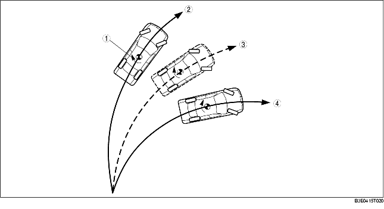

• While a vehicle normally turns safely in response to steering operation, there are instances when the limits of tire lateral grip is surpassed due to road surface conditions or vehicle speed, and the influence of evasive steering to avoid an accident or similar situations.
• Tires surpassing lateral grip exhibit one of the following conditions: Strong oversteer tendency: The rear wheels are relatively losing their grip as compared to the front wheels Strong understeer tendency: The front wheels are relatively losing their grip as compared to the rear wheels
• DSC operates at vehicle speeds of approx. 20 km/h {12.4 mph} or more in the conditions described above, controlling engine output and wheel braking to suppress oversteer and understeer tendencies.
• The vehicle speed, steering angle, lateral-G and yaw rate are detected by the sensors and used in calculations by the DSC HU/CM to determine the vehicle condition. Then, depending on the difference between the target yaw rate, calculated with the values input from each sensor, and the value detected by the yaw rate sensor, an oversteer or understeer tendency can be determined.

.
• When turning, if the actual vehicle yaw rate is larger than the target yaw rate (the yaw rate that should normally be formed as determined by the steering angle and vehicle speed), it means that the vehicle is in or about to be in a spin. Therefore the vehicle is determined to have an oversteer tendency.
• When turning, if the actual vehicle yaw rate is less than the target yaw rate (the yaw rate that should normally be formed as determined by the steering angle and vehicle speed), it means that the vehicle is not properly turning. Therefore the vehicle is determined to have an understeer tendency.